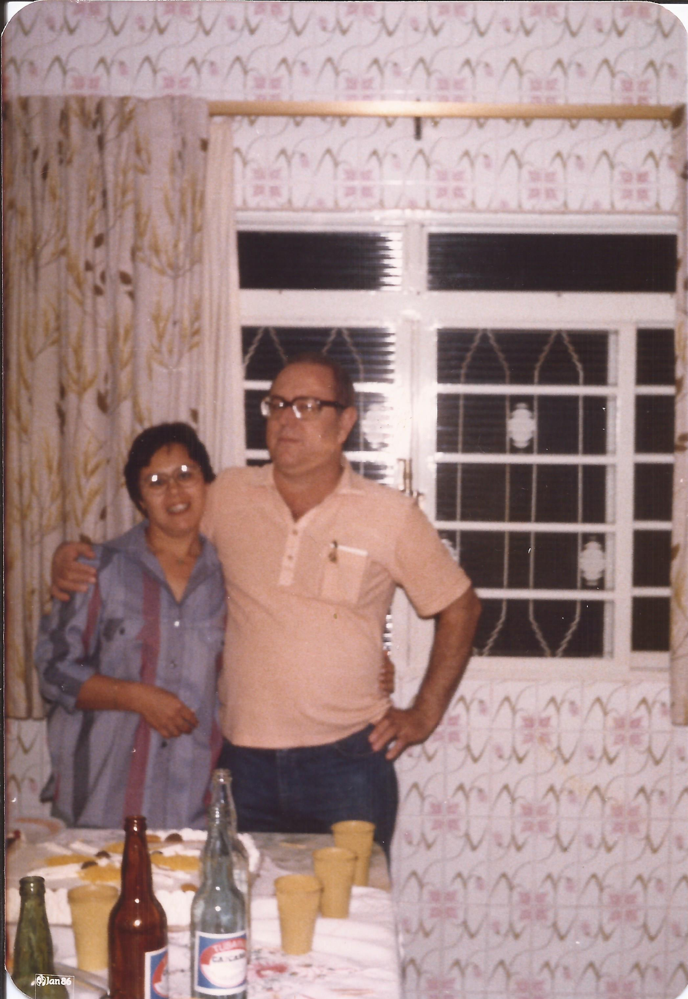

Seu aniversário
Parabéns!
Bons tempos de juventude!
Julho de 91
Passeio em Holambra
Foto junto com o avião Fokker 100, enquanto enbarcava de volta de Porto Seguro para São Paulo
1996
Ilha Porchat, São Vicente
Praia de Trancoso, Porto Seguro
1996
Ipaussu
Agosto de 1993
Camping de Ipaussu
1993
Hotel em Porto Seguro
1996
Foto com o Gabriel, no apartamento em Bauru
2001
Aras de Ipaussu
1995
Laboratório da UNIMAR, em Marília
1994
Aniversário da Marina
1995/1996
Aniversário da Santina
Voo de volta para São Paulo
1996

Trocando o Gabriel
2000
Ubatuba
1999
Gabriel com 1 ano de idade
2001
Porto de Parati
Passeio de barco em Maceió
1998
Praia de Pajuçara, Maceió
1998
Sandra, Valéria e Madrinha
06/06/2015
Seu aniversário de 46 anos
09/09/2015
Kira, Thor e Kiara
14/01/2019
Formação de catequese do Guilherme
25/11/2018
